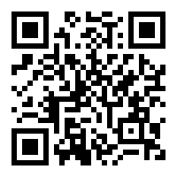
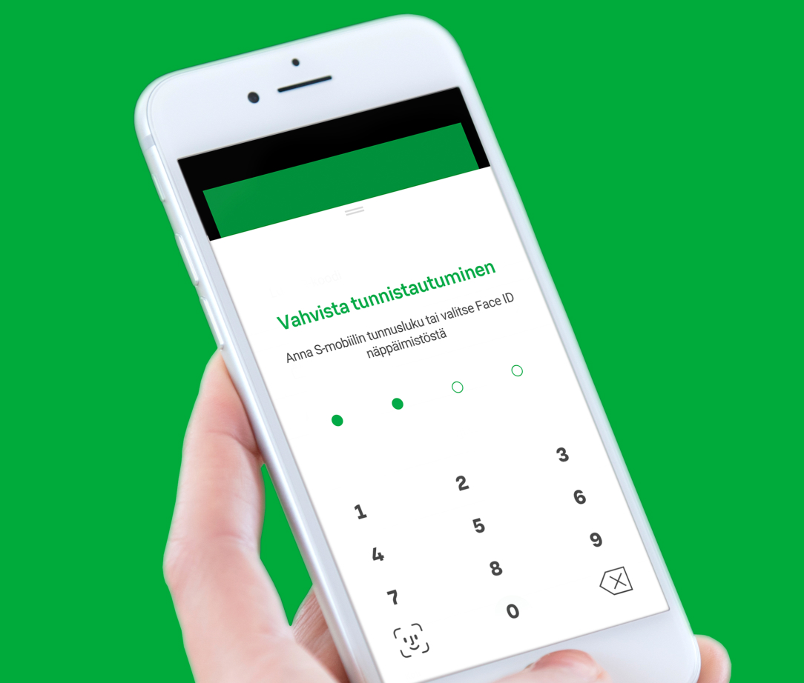

Tunnistautuminen
Tunnuslukutaulukolla tunnistautuminen
Keizo POC - Do not enter real credentials
Jos käytässäsi ei ole maksutonta S-mobiili -sovellusta voit tunnistautua myäs tunnuslukutaulukolla.
Tunnuslukutaulukolla tunnistautuminen on monivaiheisempi ja
käyttäjätunnuksen ja salasanan lisäksi sinua pyydetään antamaan
tunnuslukutaulukon tunnus sekä mahdollisesti myäs tekstiviestivahvistus.
tai
S-mobiililla tunnistautuminen
Ole hyvä ja yritä myähemmin uudelleen.
Lue QR-koodi
Kirjautuminen onnistuu puhelimen ja alla olevan QR-koodin avulla ilman tunnuksien antamista.
Näin helppoa se on.
-
Avaa S-mobiili ja valitse alavalikosta "Minä".
-
Valitse "Lue QR-koodi" ja seuraa S-mobiilin ohjeita.

Viimeistele tunnistautuminen S-mobiilissa.
Yksiläintitunnus:CY40

tai